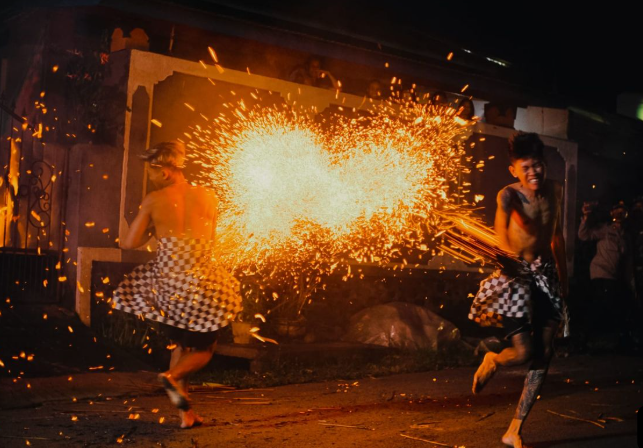
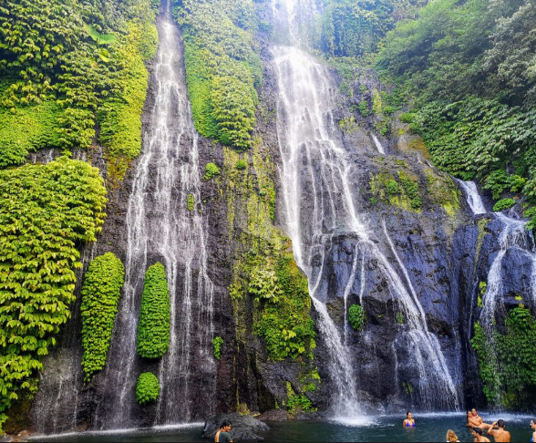

Kekayaan Budaya Sukasada
Setiap tradisi di Sukasada mengandung nilai filosofi mendalam yang terus diwariskan dari generasi ke generasi.

Perang Api (Meamuk-amukan)
Ritual tahunan di Desa Adat Padangbulia yang digelar pada malam Pengerupukan — satu hari sebelum Nyepi. Para pria bertelanjang dada saling serang menggunakan danyuh (daun kelapa kering yang dibakar) sebagai simbol penyucian desa dari Buta Kala.

Megoak-goakan
Permainan tradisional khas Desa Panji yang terinspirasi strategi perang I Gusti Ngurah Panji Sakti. Para pemain membentuk rantai manusia panjang menyerupai gagak (goak), dengan pemain terdepan sebagai kepala yang memimpin gerakan seluruh barisan.

Air Terjun Kembar Banyumala
Dua air terjun berdampingan setinggi ±25 meter di Desa Wanagiri, kaki Bukit Munduk. Airnya yang jernih mengalir ke kolam alami yang tenang, dikelilingi hutan tropis lebat yang menyejukkan.